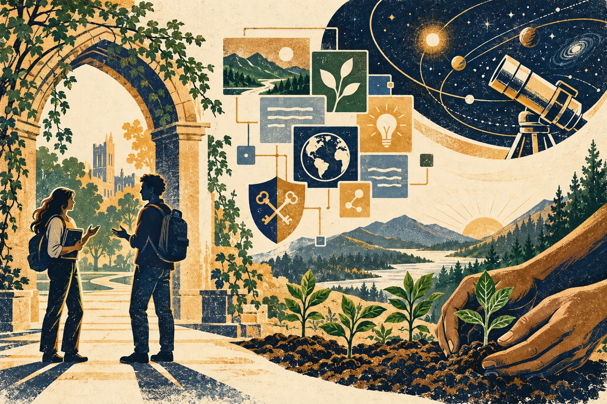

Independent daily digestFive stories worth your time
The Daily Curiosity
Tomorrow’s possibilities need care today: a peer connection on campus, a web people can edit, encryption that can evolve, an observatory worth maintaining, and the seeds of future forests. Five stories about building that capacity.

AI-generated editorial illustration · The Daily Curiosity. Imagined campus and symbolic telescope; not documentary imagery or an engineering design.
STORY 01 · Higher education · SUNY
For student veterans, the bridge to care can be another student
SUNY announced new support for student veterans on October 27, including 10 graduate social work interns serving Hudson Valley, Westchester and Suffolk community colleges. A second initiative at Farmingdale will train a student veteran to offer peer mental health support and connect fellow veterans with clinical resources. The approach puts help inside everyday campus relationships, aiming to make the transition from military life to college easier; the announcement does not yet establish outcomes from this expansion.
Source published 2026-10-27 · Briefing date 2026-10-30
What if you could edit a social app without leaving your friends?
MIT researchers introduced Social.Wiki, an experimental system in which users can edit applications with code or an AI assistant and choose which other people’s changes they see. Its decentralized design separates personal data from applications, while individual governance rules can select different versions of the same site for different users. The interesting possibility is a social web that adapts to a small group’s needs without forcing everyone into one interface, although the researchers say the platform is still in its early days.
Source published 2026-10-29 · Briefing date 2026-10-30
NIST released its finalized transition report for post-quantum cryptography, identifying vulnerable algorithms, replacement standards and migration timelines for federal systems. The October 27 announcement emphasizes that organizations must account for their entire cryptographic supply chain, not just swap an algorithm in one application. That makes this an infrastructure-planning story today: adversaries can collect encrypted information for possible future decryption, even though a quantum computer capable of breaking those protections has not yet arrived.
Source published 2026-10-27 · Briefing date 2026-10-30
Hubble’s next chapter could depend on a commercial service call
NASA announced that it is asking industry about potential missions to raise Hubble’s orbit, service the telescope or manage its eventual disposal, following an October 29 request for information. Hubble has no propulsion system to counter atmospheric drag, and NASA’s current analysis puts likely re-entry in 2033–2034, with a potential intervention needed by 2032. Keeping an existing observatory useful could preserve years of science, but this is an exploration of capabilities and interest, not an approved servicing mission.
Source published 2026-10-30 · Briefing date 2026-10-30
New York’s DEC awarded $45 million to 44 projects supporting tree nurseries, reforestation and forest-product markets, the agency announced October 29. The planned work includes collecting more than five million native seeds and growing more than one million locally adapted seedlings, alongside training and investments in wood-processing capacity. The overlooked constraint is practical: planting ambitions depend on seed collectors, nurseries and viable rural businesses, and these figures describe expected project outputs rather than trees already established.
Source published 2026-10-29 · Briefing date 2026-10-30